graph LR
A[Machine Learning]
A --> B[Supervised Learning]
A --> C[Unsupervised Learning]
A --> D[Reinforcement Learning]
B --> B1[Classification]
B --> B2[Regression]
B1 --> B1a[Decision Trees]
B1 --> B1b[Random Forests]
B1 --> B1c[SVM]
B1 --> B1d[Neural Networks]
B2 --> B2a[Linear Regression]
B2 --> B2b[Polynomial Regression]
B2 --> B2c[Ridge Regression]
C --> C1[Clustering]
C --> C2[Dimensionality Reduction]
C1 --> C1a[K-Means]
C1 --> C1b[Hierarchical Clustering]
C1 --> C1c[DBSCAN]
C2 --> C2a[PCA]
C2 --> C2b[LDA]
D --> D1[Q-Learning]
D --> D2[Deep Q-Networks]
D --> D3[Policy Gradient Methods]
Introduction to Machine Learning
Machine learning represents a sophisticated approach to solving problems by leveraging data to inform and improve decision-making processes, contrasting sharply with traditional rule-based systems. Unlike rule-based learning, which relies on predefined rules and logic to make decisions, machine learning algorithms dynamically adapt and learn from patterns within data. This enables them to handle complex and variable inputs without explicit programming for every scenario. Essentially, machine learning is a richer computational translation of mathematical and statistical models, allowing for more flexible and accurate predictions by identifying patterns and insights that rule-based systems might overlook. A wonderful aspect of machine learning is its ability to store the learned patterns and knowledge, allowing models to be reused and refined over time for future predictions, thereby continuously enhancing their performance as more data becomes available.
The Classification of Machine Learning Algorithms is shown below.
End-to-End Machine Learning Project: Classifying the Iris Dataset
In this project, we will walk through an end-to-end machine learning task using the Iris dataset. This comprehensive exercise will cover all stages of a machine learning pipeline, from data exploration to model deployment.
1. Introduction to the Dataset
The Iris dataset is a classic dataset in machine learning, widely used for benchmarking classification algorithms. It consists of measurements from 150 iris flowers, with four features- Sepal Length, Sepal Width, Petal Length, and Petal Width. Each sample is labeled with one of three species- Iris-setosa, Iris-versicolor, and Iris-virginica.
2. Objective
Our objective is to build a classification model that can accurately predict the species of an iris flower based on its measurements. We will explore the dataset, perform necessary preprocessing, and select an appropriate classification algorithm to achieve this goal.
3. Data Exploration and Preprocessing
- Exploratory Data Analysis (EDA): We will begin by analyzing the dataset to understand its structure and characteristics. This includes visualizing distributions, checking for missing values, and examining class balance.
In this stage we need to load the dataset using appropriate python libraries. We want to follow a systematic approach to understand the dataset’s structure, clean the data, and gain insights. Here’s a step-by-step procedure for EDA using Python. As the first step let’s load necessary python libraries for this job.
import pandas as pd
import numpy as np
import matplotlib.pyplot as plt
import seaborn as snsimport warnings
warnings.filterwarnings('ignore')In this EDA process, libraries such as pandas, seaborn, matplotlib, and scikit-learn are essential. Pandas is used for efficient data manipulation and preprocessing, allowing us to load, clean, and manage the dataset seamlessly. Seaborn and matplotlib provide advanced visualization capabilities to explore the distribution, outliers, and relationships among features, which are crucial for understanding the dataset’s structure and potential issues. Together, these libraries offer a comprehensive toolkit for conducting thorough exploratory data analysis, ensuring that the dataset is well-understood and ready for subsequent modeling.
In the next step, we load the Iris dataset directly from a remote URL using pandas. The code iris_df = pd.read_csv('https://raw.githubusercontent.com/sijuswamy/Model_Deployment/main/iris.csv') reads the CSV file from the specified GitHub repository and creates a DataFrame named iris_df, which contains the dataset for further analysis.
iris_df=pd.read_csv('https://raw.githubusercontent.com/sijuswamy/Model_Deployment/main/iris.csv')Viewing the beggining Dataset: The code iris_df.head() displays the first five rows of the iris_df DataFrame, providing a quick overview of the dataset’s structure and the initial entries. We just visualize first 5 samples in the dataset as a table.
iris_df.head()| sepal.length | sepal.width | petal.length | petal.width | variety | |
|---|---|---|---|---|---|
| 0 | 5.1 | 3.5 | 1.4 | 0.2 | Setosa |
| 1 | 4.9 | 3.0 | 1.4 | 0.2 | Setosa |
| 2 | 4.7 | 3.2 | 1.3 | 0.2 | Setosa |
| 3 | 4.6 | 3.1 | 1.5 | 0.2 | Setosa |
| 4 | 5.0 | 3.6 | 1.4 | 0.2 | Setosa |
Viewing the End of the Dataset: The code iris_df.tail() displays the last five rows of the iris_df DataFrame, offering insight into the final entries and the dataset’s structure at its end.
iris_df.tail()| sepal.length | sepal.width | petal.length | petal.width | variety | |
|---|---|---|---|---|---|
| 145 | 6.7 | 3.0 | 5.2 | 2.3 | Virginica |
| 146 | 6.3 | 2.5 | 5.0 | 1.9 | Virginica |
| 147 | 6.5 | 3.0 | 5.2 | 2.0 | Virginica |
| 148 | 6.2 | 3.4 | 5.4 | 2.3 | Virginica |
| 149 | 5.9 | 3.0 | 5.1 | 1.8 | Virginica |
Checking the Dataset Shape: The code iris_df.shape returns a tuple representing the dimensions of the iris_df DataFrame, indicating the number of rows and columns in the dataset.
iris_df.shape(150, 5)Viewing Column Names: The code iris_df.columns displays the names of all columns in the iris_df DataFrame, providing an overview of the dataset’s features and attributes.
iris_df.columnsIndex(['sepal.length', 'sepal.width', 'petal.length', 'petal.width',
'variety'],
dtype='object')Dataset Information: The code iris_df.info() provides a summary of the iris_df DataFrame, including the number of non-null entries, data types of each column, and memory usage, which helps assess the completeness and structure of the dataset.
iris_df.info()<class 'pandas.core.frame.DataFrame'>
RangeIndex: 150 entries, 0 to 149
Data columns (total 5 columns):
# Column Non-Null Count Dtype
--- ------ -------------- -----
0 sepal.length 150 non-null float64
1 sepal.width 150 non-null float64
2 petal.length 150 non-null float64
3 petal.width 150 non-null float64
4 variety 150 non-null object
dtypes: float64(4), object(1)
memory usage: 6.0+ KBStatistical Summary: The code iris_df.describe(include='all') generates a comprehensive summary of the iris_df DataFrame, including statistics for all columns, such as count, unique values, top frequency, and mean, which provides insights into the distribution and characteristics of the dataset.
iris_df.describe(include='all')| sepal.length | sepal.width | petal.length | petal.width | variety | |
|---|---|---|---|---|---|
| count | 150.000000 | 150.000000 | 150.000000 | 150.000000 | 150 |
| unique | NaN | NaN | NaN | NaN | 3 |
| top | NaN | NaN | NaN | NaN | Setosa |
| freq | NaN | NaN | NaN | NaN | 50 |
| mean | 5.843333 | 3.057333 | 3.758000 | 1.199333 | NaN |
| std | 0.828066 | 0.435866 | 1.765298 | 0.762238 | NaN |
| min | 4.300000 | 2.000000 | 1.000000 | 0.100000 | NaN |
| 25% | 5.100000 | 2.800000 | 1.600000 | 0.300000 | NaN |
| 50% | 5.800000 | 3.000000 | 4.350000 | 1.300000 | NaN |
| 75% | 6.400000 | 3.300000 | 5.100000 | 1.800000 | NaN |
| max | 7.900000 | 4.400000 | 6.900000 | 2.500000 | NaN |
These basic pandas functions are most important for understand the data well. Now move on to the next level of data preparation namely Data Cleaning.
- Data Cleaning: We will handle any missing values and ensure the data is ready for modeling. Basic preprocessing tasks will include feature scaling and normalization. Various steps in this stage is explained below.
Checking for Duplicates: The code iris_df.duplicated().sum() counts the number of duplicate rows in the iris_df DataFrame, helping identify any redundancy in the dataset that may need to be addressed.
iris_df.duplicated().sum()1
Tip
Checking for duplicates is important because duplicate rows can skew analysis, introduce bias, and affect the performance of machine learning models. By identifying and removing duplicates, we ensure that each observation is unique and that the dataset accurately represents the underlying data without redundancy.
Identifying Duplicate Rows: The code iris_df[iris_df.duplicated()] filters and displays the duplicate rows in the iris_df DataFrame, allowing us to inspect and address any redundancy in the dataset by showing which rows are duplicated.
iris_df[iris_df.duplicated()]| sepal.length | sepal.width | petal.length | petal.width | variety | |
|---|---|---|---|---|---|
| 142 | 5.8 | 2.7 | 5.1 | 1.9 | Virginica |
Checking Class Distribution and Data Imbalance: The code iris_df['variety'].value_counts() counts the number of occurrences of each unique value in the variety column of the iris_df DataFrame, providing insight into the distribution of classes and helping to identify any class imbalances in the dataset.
iris_df['variety'].value_counts()variety
Setosa 50
Versicolor 50
Virginica 50
Name: count, dtype: int64
Caution
An imbalanced dataset, where some classes are significantly underrepresented compared to others, can lead to biased model performance. It may cause the model to favor the majority class, resulting in poor predictive accuracy for the minority class and skewed evaluation metrics. Addressing class imbalance ensures that the model learns to generalize across all classes effectively, leading to more reliable and fair predictions.
Checking for Missing Values: The code iris_df.isnull().sum(axis=0) calculates the number of missing values for each column in the iris_df DataFrame, helping to identify and address any gaps in the dataset that may need to be handled before analysis or modeling.
iris_df.isnull().sum(axis=0)sepal.length 0
sepal.width 0
petal.length 0
petal.width 0
variety 0
dtype: int64Checking for missing values is essential because missing data can compromise the integrity of the analysis and modeling process. By identifying columns with missing values, we can take appropriate steps to handle them—such as imputation or removal—ensuring that the dataset is complete and reliable for generating accurate insights and predictions.
Statistical summary: Checking skewness, kurtosis, and correlation is essential for understanding data distribution and feature relationships. Skewness measures asymmetry; values between -0.5 and 0.5 indicate a fairly normal distribution, while values beyond this range suggest significant skewness. Kurtosis assesses the heaviness of tails; values close to 3 indicate a normal distribution, while values much higher or lower suggest the presence or absence of outliers, respectively. Correlation examines feature relationships, with values close to 1 or -1 indicating strong correlations that could lead to multicollinearity. Analyzing these metrics helps in identifying data transformation needs, managing outliers, and optimizing feature selection, ultimately improving model performance and reliability. Before performing the statistical operations, check for the categorical variables. If so remove them and apply statistical operations on that pruned dataset. The following code will do that.
# Check if 'variety' column exists in the DataFrame
if 'variety' in iris_df.columns:
removed_col = iris_df["variety"]
iris_num = iris_df.drop('variety', axis=1) # Use drop to remove the column and keep the rest
print("Successfully removed 'variety' column.")
else:
print("Column 'variety' not found in the DataFrame.")Successfully removed 'variety' column.Checking Skewness: The code iris_num.skew() calculates the skewness of each numeric column in the iris_num DataFrame, providing insights into the asymmetry of the data distribution. Skewness values between -0.5 and 0.5 suggest a relatively normal distribution, while values outside this range indicate potential skewness that may require transformation for better modeling.
iris_num.skew()sepal.length 0.314911
sepal.width 0.318966
petal.length -0.274884
petal.width -0.102967
dtype: float64Checking Kurtosis: The code iris_num.kurt() calculates the kurtosis of each numeric column in the iris_num DataFrame, which measures the “tailedness” of the data distribution. Values close to 3 suggest a distribution similar to the normal distribution, while values significantly higher or lower indicate heavy or light tails, respectively, which may point to the presence of outliers or a lack thereof.
iris_num.kurt()sepal.length -0.552064
sepal.width 0.228249
petal.length -1.402103
petal.width -1.340604
dtype: float64Visualizing Class Distribution: The code print(iris_df['variety'].value_counts()) prints the count of each unique value in the variety column, showing the distribution of classes in the dataset. The sns.countplot(iris_df['variety']) function from Seaborn creates a count plot to visually represent the distribution of classes, helping to easily identify any class imbalances or differences in class frequencies.
print(iris_df['variety'].value_counts())variety
Setosa 50
Versicolor 50
Virginica 50
Name: count, dtype: int64Visualizing Sepal Dimensions: The code plt.title('Comparison between sepal width and length') sets the title for the plot, while sns.scatterplot(x=iris_df['sepal.length'], y=iris_df['sepal.width']) creates a scatter plot using Seaborn to visualize the relationship between sepal length and sepal width. This visualization helps in understanding the correlation between these two features and identifying any patterns or trends in the data.
plt.figure(figsize=(6,5))
plt.title('Comparison between sepal width and length')
sns.scatterplot(x=iris_df['sepal.length'], y=iris_df['sepal.width']);
Enhanced Scatter Plot with Species: The code plt.figure(figsize=(16,9)) sets the size of the plot, and plt.title('Comparison between sepal width and length on the basis of species') adds a title to the plot. The sns.scatterplot(x=iris_df['sepal.length'], y=iris_df['sepal.width'], hue=iris_df['variety'], s=50) function creates a scatter plot where each point represents sepal length and width, with different colors indicating different species. This visualization helps in comparing the sepal dimensions across species and identifying patterns or clusters in the data. The plt.show() command displays the plot.
plt.figure(figsize=(6,5))
plt.title('Comparison between sepal width and length on the basis of species')
sns.scatterplot(x=iris_df['sepal.length'], y=iris_df['sepal.width'], hue = iris_df['variety'], s= 50);
plt.show()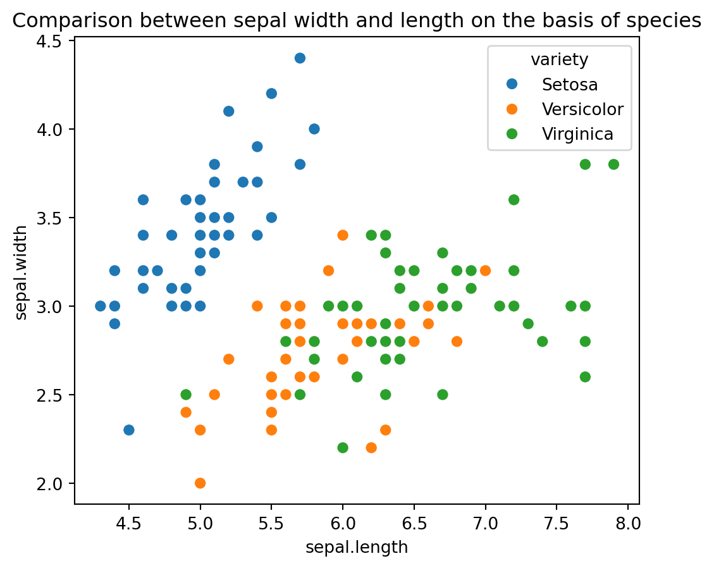
Visualizing Petal Dimensions: The code plt.title('Comparison between petal width and length') sets the title for the plot, while sns.scatterplot(x=iris_df['petal.length'], y=iris_df['petal.width']) creates a scatter plot using Seaborn to visualize the relationship between petal length and petal width. This plot helps in examining the correlation between these two features and understanding how they vary with each other in the dataset.
plt.figure(figsize=(6,5))
plt.title('Comparison between petal width and length')
sns.scatterplot(x=iris_df['petal.length'], y=iris_df['petal.width']);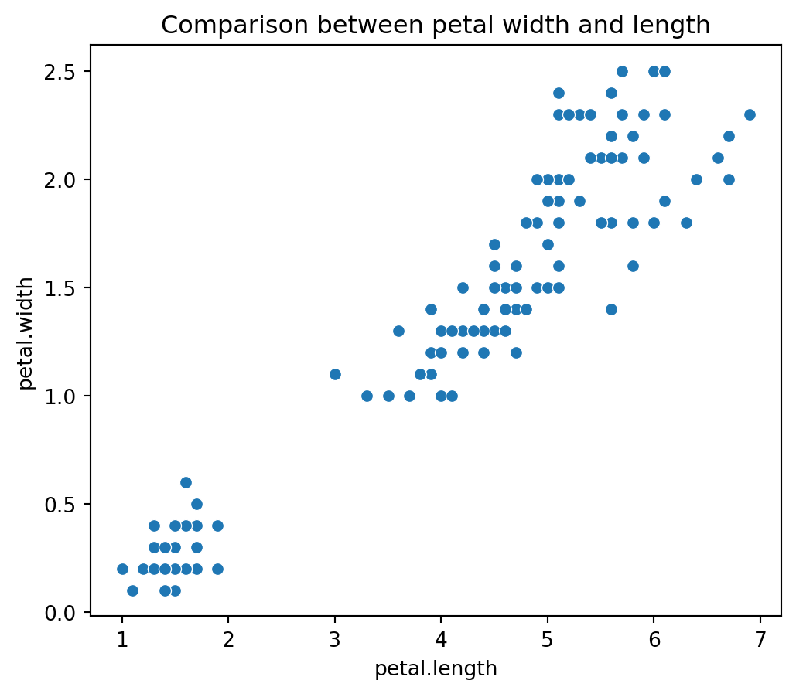
Enhanced Scatter Plot with Species for Petal Dimensions: The code plt.figure(figsize=(10,9)) sets the size of the plot, and plt.title('Comparison between Petal width and length on the basis of species') adds a title. The sns.scatterplot(x=iris_df['petal.length'], y=iris_df['petal.width'], hue=iris_df['variety'], s=50) function creates a scatter plot where petal length and width are plotted with different colors representing species. This visualization facilitates comparison of petal dimensions across different species, helping to identify patterns or clusters. The plt.show() command displays the plot.
plt.figure(figsize=(6,5))
plt.title('Comparison between Petal width and length on the basis of species')
sns.scatterplot(x=iris_df['petal.length'], y=iris_df['petal.width'], hue = iris_df['variety'], s= 50);
plt.show()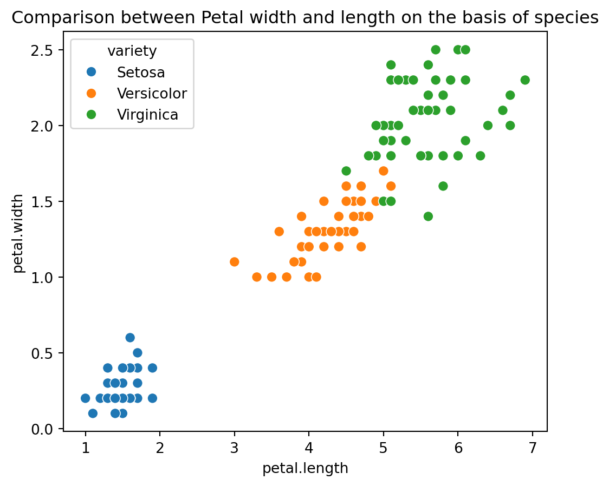
From the above visualizations, we can tell that the iris-setosa species has smaller sepal length but higher width. While we see Versicolor lies in almost middle for length as well as width. While Virginica has larger sepal lengths and smaller sepal widths. We can see two separate clusters but not sure about the species so let’s bring the species into the equation as well.
We see that setosa has the smallest petal length as well as petal widths, while Versicolor has average petal length and petal width while the virginica species has the highest petal length as well as petal width.
Now let’s visualize all the columns relationship using pair plots.
plt.figure(figsize=(6,5))
sns.pairplot(iris_df,hue="variety",height=3);<Figure size 576x480 with 0 Axes>
Summary of EDA: Pair plot represents the relationship between our target and the variables. We can see that the setosa species has a large difference in its characteristics when compared to the other species, it has smaller petal width and length while its sepal width is high and its sepal length is low. Similar kind of conclusions can be drawn for the other species like the Versicolor species usually have average dimensions whether it is sepal or pedal. While virginica has high pedal width and length while it has small sepal width but large sepal length. Also it is noted that Petal length and petal width are the most suitable features to classify the iris flowers in to its different varities.
Calculating Feature Correlation: The code iris_num.corr() computes the correlation matrix for the numeric columns in the iris_num DataFrame. This matrix shows the pairwise correlation coefficients between features, helping to identify linear relationships and dependencies among them, which can be crucial for feature selection and understanding multicollinearity in the dataset.
iris_num.corr()| sepal.length | sepal.width | petal.length | petal.width | |
|---|---|---|---|---|
| sepal.length | 1.000000 | -0.117570 | 0.871754 | 0.817941 |
| sepal.width | -0.117570 | 1.000000 | -0.428440 | -0.366126 |
| petal.length | 0.871754 | -0.428440 | 1.000000 | 0.962865 |
| petal.width | 0.817941 | -0.366126 | 0.962865 | 1.000000 |
A visual representation of the correlation matrix is shown below.
fig = plt.figure(figsize = (6,5))
sns.heatmap(iris_num.corr(), cmap='Blues', annot = True);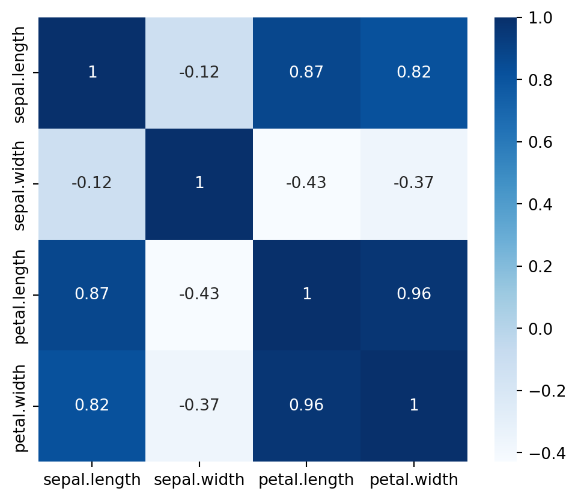
From the above heatmap, we see that petal length and petal width have a high correlation, petal width and sepal length have good correlation as well as petal length and sepal length have good correlations.
Frequency distribution of feature set: Let’s see the distribution of data for the various columns of our data set.
fig, axes = plt.subplots(2, 2, figsize=(6,5))
axes[0,0].set_title("Distribution of Sepal Width")
axes[0,0].hist(iris_df['sepal.width'], bins=5);
axes[0,1].set_title("Distribution of Sepal Length")
axes[0,1].hist(iris_df['sepal.length'], bins=7);
axes[1,0].set_title("Distribution of Petal Width")
axes[1,0].hist(iris_df['petal.width'], bins=5);
axes[1,1].set_title("Distribution of Petal Length")
axes[1,1].hist(iris_df['petal.length'], bins=6);
Univariate feature analysis: The code sns.FacetGrid(iris_df, hue="variety", height=5).map(sns.distplot, "petal.width").add_legend() creates a FacetGrid using Seaborn library to visualize the distribution of petal.width across different species in the iris_df DataFrame. The hue="variety" parameter ensures that the distribution plots are colored according to the species, while height=5 sets the size of the plots. This visualization helps in analyzing the distribution and density of the petal width feature for each species, providing insights into how this feature varies across different classes.
sns.FacetGrid(iris_df,hue="variety",height=5).map(sns.distplot,"petal.width").add_legend();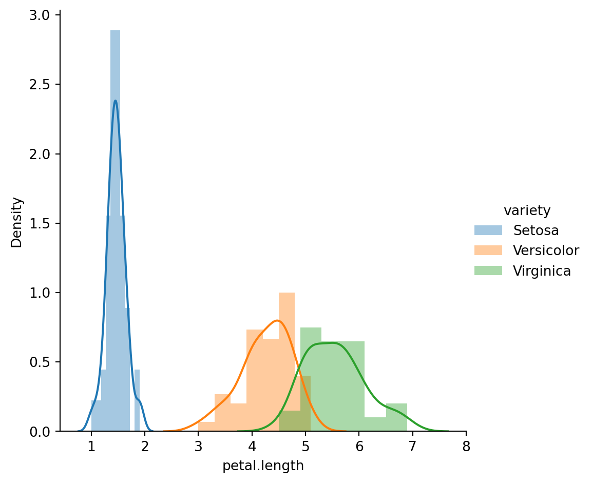
sns.FacetGrid(iris_df,hue="variety",height=5).map(sns.distplot,"sepal.length").add_legend();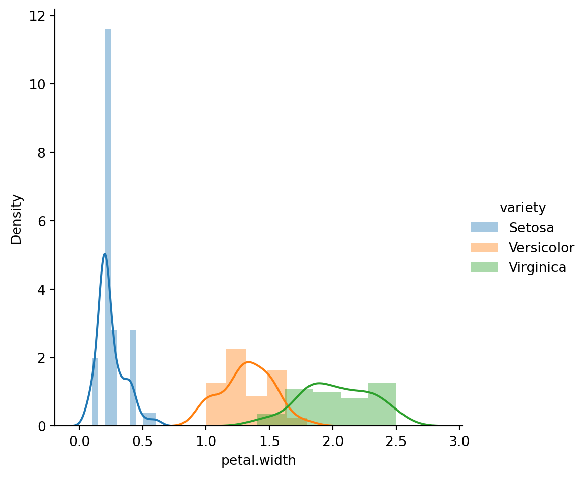
sns.FacetGrid(iris_df,hue="variety",height=5).map(sns.distplot,"sepal.width").add_legend();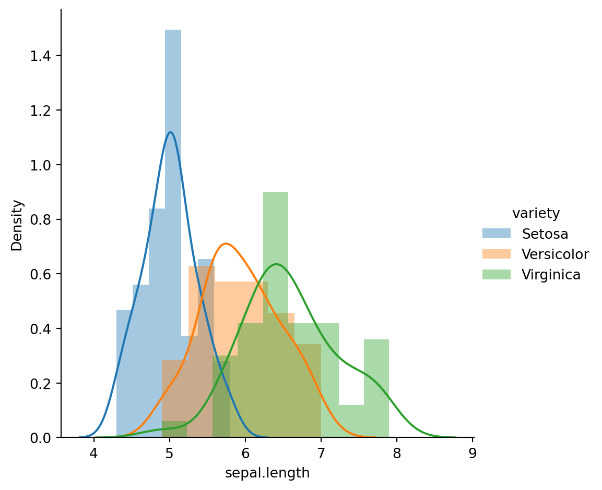
Boxplots for Feature Analysis: The code fig, axes = plt.subplots(2, 2, figsize=(16,9)) creates a 2x2 grid of subplots with a figure size of 16x9 inches. Each sns.boxplot() function call plots the distribution of a specific feature (petal.width, petal.length, sepal.length, sepal.width) against the variety of the iris species. The orient='v' parameter specifies vertical boxplots. This visualization helps in comparing the distributions of different features across species, highlighting differences in feature ranges, central tendencies, and potential outliers. The plt.show() command displays all the plots.
fig, axes = plt.subplots(2, 2, figsize=(6,5))
sns.boxplot( y="petal.width", x= "variety", data=iris_df, orient='v' , ax=axes[0, 0])
sns.boxplot( y="petal.length", x= "variety", data=iris_df, orient='v' , ax=axes[0, 1])
sns.boxplot( y="sepal.length", x= "variety", data=iris_df, orient='v' , ax=axes[1, 0])
sns.boxplot( y="sepal.width", x= "variety", data=iris_df, orient='v' , ax=axes[1, 1])
plt.show()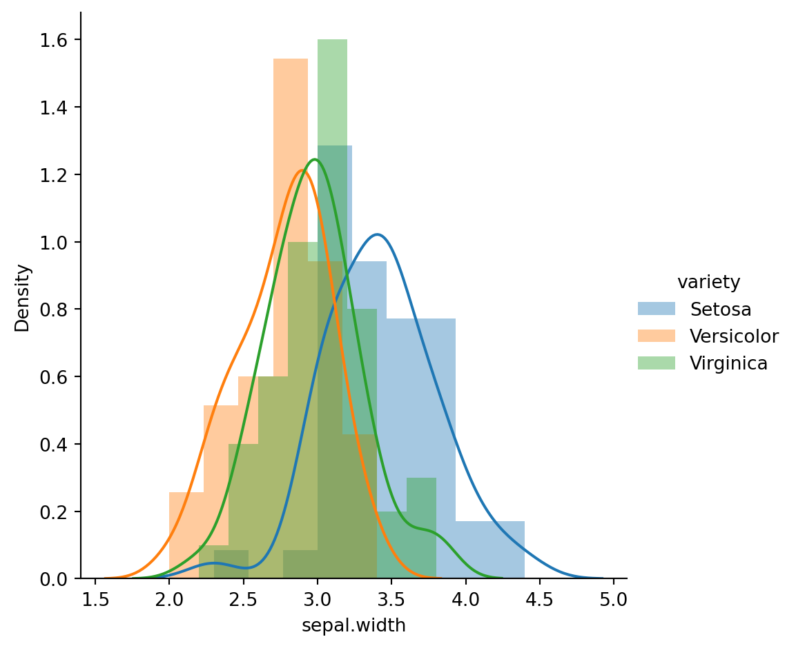
The box plots describe that:
The setosa usually has smaller features with few outliers.
The Versicolor species has average features
The virginica species has the longest features widths and lengths as compared to others.
We can further see the distributions using the violin plot on our dataset
fig, axes = plt.subplots(2, 2, figsize=(6,5))
sns.violinplot(y="petal.width", x= "variety", data=iris_df, orient='v' , ax=axes[0, 0])
sns.violinplot(y="petal.length", x= "variety", data=iris_df, orient='v' , ax=axes[0, 1])
sns.violinplot(y="sepal.length", x= "variety", data=iris_df, orient='v' , ax=axes[1, 0])
sns.violinplot(y="sepal.length", x= "variety", data=iris_df, orient='v' , ax=axes[1, 1])
plt.show()
The kernel density of the data along with the full distribution of the data is shown through the violin plots. We can see the probability density of the various features. Inshort, even the basic EDA give us deeper insight about the data and give hints for classification/ regression models on feature sets.
4. Model Identification and Training
Based on our data exploration, we will select a suitable classification model. Based on the Exploratory Data Analysis (EDA), we found that petal.length and petal.width are the most influential features for determining the variety of the Iris flower. To classify the Iris dataset, several classification models can be employed:
1. Logistic Regression
Logistic Regression is a simple yet effective classification algorithm that models the probability of a class label based on input features. It’s suitable for binary and multiclass classification problems and works well when the relationship between features and target is approximately linear.
2. k-Nearest Neighbors (k-NN)
k-Nearest Neighbors is a non-parametric method used for classification. It works by finding the k nearest data points to a given point and assigning the class that is most common among these neighbors. It is effective for datasets where the decision boundary is non-linear.
3. Support Vector Machine (SVM)
Support Vector Machine is a powerful classification technique that works by finding the hyperplane that best separates the classes in the feature space. It is well-suited for datasets with a clear margin of separation and can handle both linear and non-linear classification tasks using kernel tricks.
4. Decision Tree
Decision Tree is a model that splits the data into subsets based on the value of input features, creating a tree-like structure of decisions. It is useful for handling both categorical and numerical data and provides a clear model interpretability.
5. Random Forest
Random Forest is an ensemble method that combines multiple decision trees to improve classification performance. It reduces overfitting and improves accuracy by averaging the predictions from multiple trees, making it robust and effective for complex datasets.
Importing Required Libraries
To perform machine learning tasks and evaluate model performance, the following libraries are imported:
from sklearn.metrics import accuracy_score, classification_report, confusion_matrix
from sklearn.model_selection import train_test_split
import joblibaccuracy_scorefromsklearn.metrics: This function is used to compute the accuracy of the classification model by comparing the predicted labels to the true labels in the test set.train_test_splitfromsklearn.model_selection: This function is used to split the dataset into training and testing subsets, ensuring that the model is trained on one portion of the data and evaluated on a separate portion.joblib: This library is used for saving and loading Python objects efficiently, particularly for persisting trained models for future use.
In the next immediate step, we resample and split the dataset for training and testing. This can be done as follows:
# random seed
seed = 42
iris_df.sample(frac=1, random_state=seed)
# selecting features and target data
X = iris_df[['sepal.length', 'sepal.width', 'petal.length', 'petal.width']]
y = iris_df[['variety']]
# split data into train and test sets
# 70% training and 30% test
X_train, X_test, y_train, y_test = train_test_split(
X, y, test_size=0.3, random_state=seed, stratify=y)In the next section, we will create instances of all the above mentioned classification algorithms one by one.
1. Logistic Regression
To Train and Evaluate the Logistic Regression Model, follow these steps.
Step -1: Import Required Libraries Here we need only the LogisticRegression instance from the sklearn library. This can be done as follows.
from sklearn.linear_model import LogisticRegressionStep-2: Initialize the Model
Create an instance of the Logistic Regression model:
model = LogisticRegression(max_iter=200)Step-3” 3. Train the Model
Fit the model to the training data:
model.fit(X_train, y_train.values.ravel())LogisticRegression(max_iter=200)In a Jupyter environment, please rerun this cell to show the HTML representation or trust the notebook.
On GitHub, the HTML representation is unable to render, please try loading this page with nbviewer.org.
LogisticRegression(max_iter=200)
Step-4: Make Predictions
Use the trained model to predict the labels for the test set:
y_pred = model.predict(X_test)Step-5 Evaluate the Model
Assess the model’s performance using confussion matrix, model accuracy and a detailed classification report:
# Calculate accuracy
accuracy = accuracy_score(y_test, y_pred)
# Generate confusion matrix
conf_matrix = confusion_matrix(y_test, y_pred)
# Generate classification report
report = classification_report(y_test, y_pred)# Plot confusion matrix as a heatmap
plt.figure(figsize=(6,5))
sns.heatmap(conf_matrix, annot=True, fmt='d', cmap='Blues', xticklabels=y.columns, yticklabels=y.columns)
plt.title('Confusion Matrix')
plt.xlabel('Predicted Labels')
plt.ylabel('True Labels')
plt.show()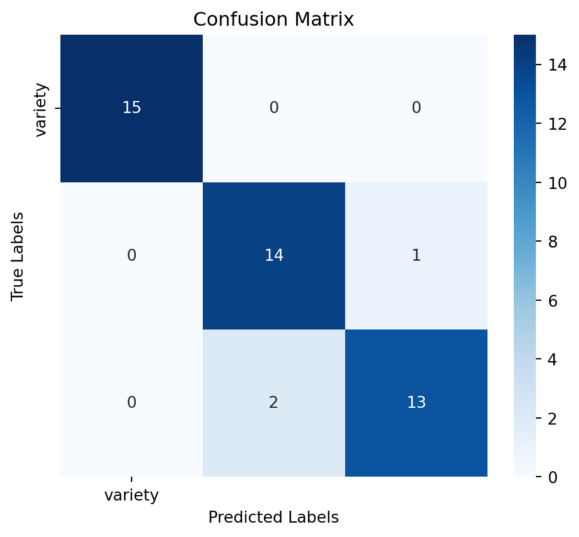
print(f"Accuracy: {accuracy:.2f}")
print("Classification Report:")
print(report)For this project, we will use the RandomForestClassifier, a robust and versatile model that performs well with the Iris dataset.
1. K-Nearest Neighbour Classifier
To Train and Evaluate the K-NN Model, follow these steps.
Step -1: Import Required Libraries Here we need only the LogisticRegression instance from the sklearn library. This can be done as follows.
from sklearn.neighbors import KNeighborsClassifierStep-2: Initialize the Model
Create an instance of the K-NN model:
model = KNeighborsClassifier(n_neighbors=5)Step-3” 3. Train the Model
Fit the model to the training data:
model.fit(X_train, y_train.values.ravel())KNeighborsClassifier()In a Jupyter environment, please rerun this cell to show the HTML representation or trust the notebook.
On GitHub, the HTML representation is unable to render, please try loading this page with nbviewer.org.
KNeighborsClassifier()
Step-4: Make Predictions
Use the trained model to predict the labels for the test set:
y_pred = model.predict(X_test)Step-5 Evaluate the Model
Assess the model’s performance using confussion matrix, model accuracy and a detailed classification report:
# Calculate accuracy
accuracy = accuracy_score(y_test, y_pred)
# Generate confusion matrix
conf_matrix = confusion_matrix(y_test, y_pred)
# Generate classification report
report = classification_report(y_test, y_pred)# Plot confusion matrix as a heatmap
plt.figure(figsize=(6,5))
sns.heatmap(conf_matrix, annot=True, fmt='d', cmap='Blues', xticklabels=y.columns, yticklabels=y.columns)
plt.title('Confusion Matrix')
plt.xlabel('Predicted Labels')
plt.ylabel('True Labels')
plt.show()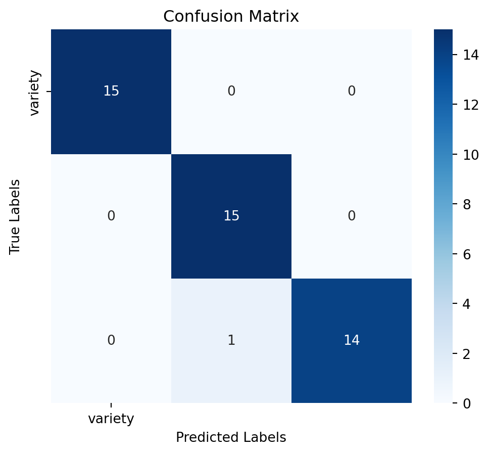
print(f"Accuracy: {accuracy:.2f}")
print("Classification Report:")
print(report)3. Support Vector Machine Classifier
To Train and Evaluate the Logistic Regression Model, follow these steps.
Step -1: Import Required Libraries Here we need only the SVC instance from the sklearn library. This can be done as follows.
from sklearn.svm import SVCStep-2: Initialize the Model
Create an instance of the SVC model:
model = SVC(kernel='linear', C=1.0, random_state=seed)Step-3” 3. Train the Model
Fit the model to the training data:
model.fit(X_train, y_train.values.ravel())SVC(kernel='linear', random_state=42)In a Jupyter environment, please rerun this cell to show the HTML representation or trust the notebook.
On GitHub, the HTML representation is unable to render, please try loading this page with nbviewer.org.
SVC(kernel='linear', random_state=42)
Step-4: Make Predictions
Use the trained model to predict the labels for the test set:
y_pred = model.predict(X_test)Step-5 Evaluate the Model
Assess the model’s performance using confussion matrix, model accuracy and a detailed classification report:
# Calculate accuracy
accuracy = accuracy_score(y_test, y_pred)
# Generate confusion matrix
conf_matrix = confusion_matrix(y_test, y_pred)
# Generate classification report
report = classification_report(y_test, y_pred)# Plot confusion matrix as a heatmap
plt.figure(figsize=(6,5))
sns.heatmap(conf_matrix, annot=True, fmt='d', cmap='Blues', xticklabels=y.columns, yticklabels=y.columns)
plt.title('Confusion Matrix')
plt.xlabel('Predicted Labels')
plt.ylabel('True Labels')
plt.show()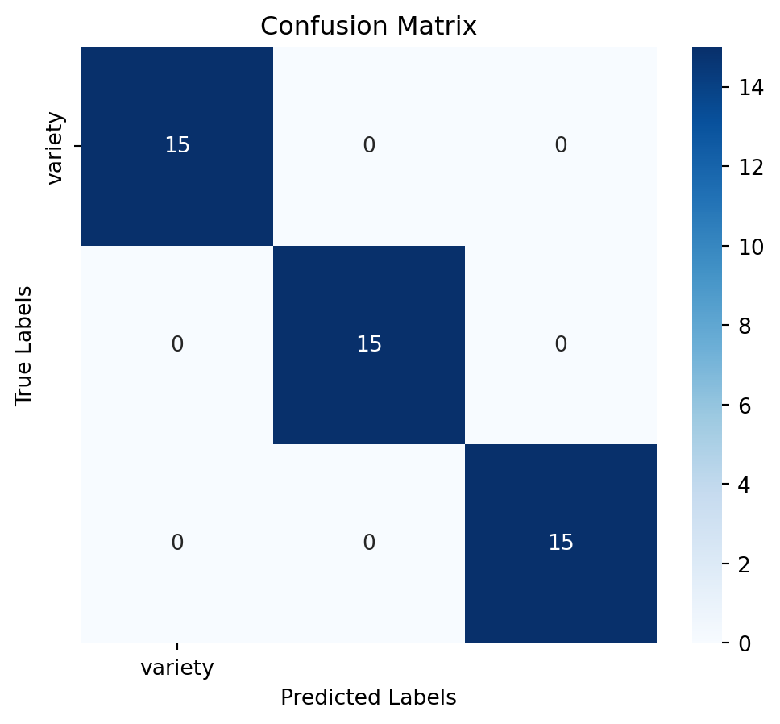
print(f"Accuracy: {accuracy:.2f}")
print("Classification Report:")
print(report)4. Decision Tree Classifier
To Train and Evaluate the Decision Tree Model, follow these steps.
Step -1: Import Required Libraries Here we need only the Decision Tree instance from the sklearn library. This can be done as follows.
from sklearn.tree import DecisionTreeClassifierStep-2: Initialize the Model
Create an instance of the Decision tree model:
model = DecisionTreeClassifier(random_state=seed)Step-3” 3. Train the Model
Fit the model to the training data:
model.fit(X_train, y_train.values.ravel())DecisionTreeClassifier(random_state=42)In a Jupyter environment, please rerun this cell to show the HTML representation or trust the notebook.
On GitHub, the HTML representation is unable to render, please try loading this page with nbviewer.org.
DecisionTreeClassifier(random_state=42)
Step-4: Make Predictions
Use the trained model to predict the labels for the test set:
y_pred = model.predict(X_test)Step-5 Evaluate the Model
Assess the model’s performance using confussion matrix, model accuracy and a detailed classification report:
# Calculate accuracy
accuracy = accuracy_score(y_test, y_pred)
# Generate confusion matrix
conf_matrix = confusion_matrix(y_test, y_pred)
# Generate classification report
report = classification_report(y_test, y_pred)# Plot confusion matrix as a heatmap
plt.figure(figsize=(6,5))
sns.heatmap(conf_matrix, annot=True, fmt='d', cmap='Blues', xticklabels=y.columns, yticklabels=y.columns)
plt.title('Confusion Matrix')
plt.xlabel('Predicted Labels')
plt.ylabel('True Labels')
plt.show()
print(f"Accuracy: {accuracy:.2f}")
print("Classification Report:")
print(report)5. RandonForest Classifier
To Train and Evaluate the RandomForest Model, follow these steps.
Step -1: Import Required Libraries Here we need only the Random Forest instance from the sklearn library. This can be done as follows.
from sklearn.ensemble import RandomForestClassifierStep-2: Initialize the Model
Create an instance of the RandomForest model:
Rf_model = RandomForestClassifier(n_estimators=100, random_state=seed)Step-3: Train the Model
Fit the model to the training data:
Rf_model.fit(X_train, y_train.values.ravel())RandomForestClassifier(random_state=42)In a Jupyter environment, please rerun this cell to show the HTML representation or trust the notebook.
On GitHub, the HTML representation is unable to render, please try loading this page with nbviewer.org.
RandomForestClassifier(random_state=42)
Step-4: Make Predictions
Use the trained model to predict the labels for the test set:
y_pred = Rf_model.predict(X_test)Step-5: Evaluate the Model
Assess the model’s performance using confussion matrix, model accuracy and a detailed classification report:
# Calculate accuracy
accuracy = accuracy_score(y_test, y_pred)
# Generate confusion matrix
conf_matrix = confusion_matrix(y_test, y_pred)
# Generate classification report
report = classification_report(y_test, y_pred)# Plot confusion matrix as a heatmap
plt.figure(figsize=(6,5))
sns.heatmap(conf_matrix, annot=True, fmt='d', cmap='Blues', xticklabels=y.columns, yticklabels=y.columns)
plt.title('Confusion Matrix')
plt.xlabel('Predicted Labels')
plt.ylabel('True Labels')
plt.show()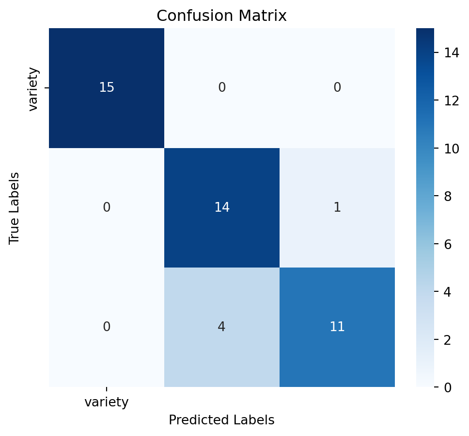
print(f"Accuracy: {accuracy:.2f}")
print("Classification Report:")
print(report)For this project, we will use the RandomForestClassifier, a robust and versatile model that performs well with the Iris dataset.
5. Model Selection
After training the model, we will evaluate its performance using various metrics such as accuracy and classification report. This will help us understand how well the model is performing and whether any improvements are needed. In this context, the RandomForestClassifier model is the winner. So we will select and save this model for deployment.
joblib.dump(Rf_model, 'rf_model.sav')['rf_model.sav']6. Deployment
Finally, we will deploy our trained model using Streamlit, an open-source framework that allows us to create interactive web applications for real-time predictions. This will enable users to input flower measurements and receive predictions on the species.
To deploy the Random Forest Classifier model using Streamlit, we’ll need to set up several components for the complete workflow. Here’s a step-by-step guide to create the necessary files:
1. Prepare the Environment: In this step install the streamlit library using folowing code.
python -m pip install streamlite2. Create the source code to load the trained model-model.py:
This .py file is used to load the trained model and handle predictions.
# model.py
import joblib
def load_model():
"""Load the trained Random Forest model from a file."""
model = joblib.load('rf_model.sav')
return model3. Create prediction.py:
This .py file handles the prediction logic, using the loaded model to make predictions based on input data. The source code for this job is given below.
# File name: prediction.py
from model import load_model
import pandas as pd
def predict(data):
"""Predict the class of iris based on input features."""
model = load_model()
return model.predict(data)4. Creating the app.py:
This is the main Streamlit application file. It provides the user interface for inputting data and displaying predictions.
import streamlit as st
import pandas as pd
import numpy as np
from prediction import predict
st.title('Classifying Iris Flowers')
st.markdown('Toy model to play to classify iris flowers into \
(setosa, versicolor, virginica) based on their sepal/petal \
and length/width.')
st.header("Plant Features")
col1, col2 = st.columns(2)
with col1:
st.text("Sepal characteristics")
sepal_l = st.slider('Sepal lenght (cm)', 1.0, 8.0, 0.5)
sepal_w = st.slider('Sepal width (cm)', 2.0, 4.4, 0.5)
with col2:
st.text("Pepal characteristics")
petal_l = st.slider('Petal lenght (cm)', 1.0, 7.0, 0.5)
petal_w = st.slider('Petal width (cm)', 0.1, 2.5, 0.5)
st.text('')
if st.button("Predict type of Iris"):
result = predict(
np.array([[sepal_l, sepal_w, petal_l, petal_w]]))
st.text(result[0])
st.text('')
st.text('')
st.markdown(
'`Create by` [Intel-Unnati](https://sijuswamy.github.io/mywebsite/) | \
`Code:` [GitHub](https://github.com/sijuswamy)')5. Run the Streamlit App:
Navigate to the directory containing your files and run the Streamlit app using the following command:
python streamlit run app.pyThis command will start a local web server and open the application in your default web browser. You can input the iris flower measurements and get the predicted variety.
In this project we used specific versions of the libraries. Save the following libraries in a text file- requirements.txt.
joblib==1.3.2
streamlit==1.31.1
scikit-learn==1.2.2
pandas==2.0.0
Try it yourself!
- You just open the VScode editor
- Create a folder
- Create a virtual environment
- Activate virtual environment
- Install the required libraries using
pip install -r requirements.txtin the powershell or command prompt - Create the
.pyfilemodel.pyand populate the content ofmodel.pycode chunk. - Crate the
.pyfileprediction.pyand populate the content ofprediction.pycode chunk. - Create the
.pyfileapp.pyand populate the content ofapp.pycode chunk. - Run the
.pyfile in the command prompt or powershell using the commandstreamlit run app.py. - Now you will be redirected to a localhost port and the site will be published locally.
A screenshot of your website is shown below.